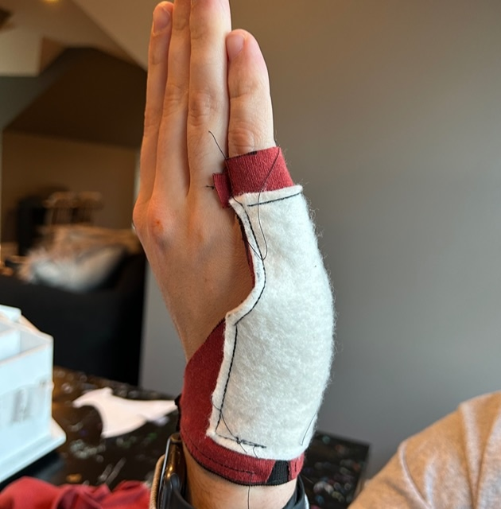
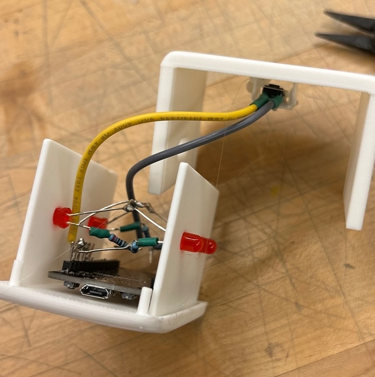
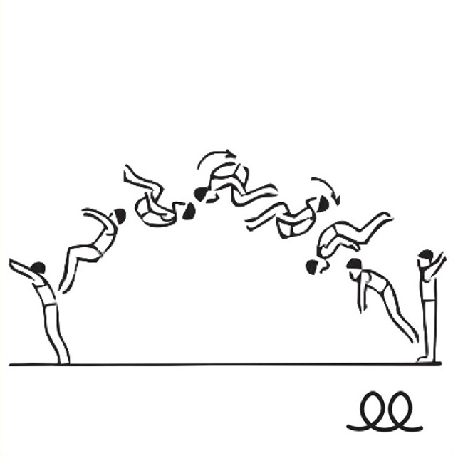

I grew up in Wallingford, Connecticut, and first discovered biomedical engineering in fourth grade, when I qualified for the state's Invention Convention competition hosted at UConn. While I was there displaying my rice-heated backpack, I had the chance to meet representatives from a wearable technology company.
As I was a competitive gymnast through high school, my various injuries introduced me to more and more medical technology, and my dream to build things that heal people slowly festered into a career vision.
Now, I do just that through my classes and clubs, like Medical Makers, where I've served as both Project Manager and Co-President. We work with the Shirley Ryan AbilityLab, the #1 Rehabilitation Hospital in the United States, to design and prototype novel medical devices.
When I'm not working on any of my projects, I enjoy playing squash, going on long, exploratory walks, and reading and writing poetry. If you find that interesting, you should read my article about why I think every engineer should read poetry here.
Thanks for stopping by, and feel free to write me with any questions or comments!
Eraser Glove

IoT Light Box

JudgeML Shorthand Recognition Platform
